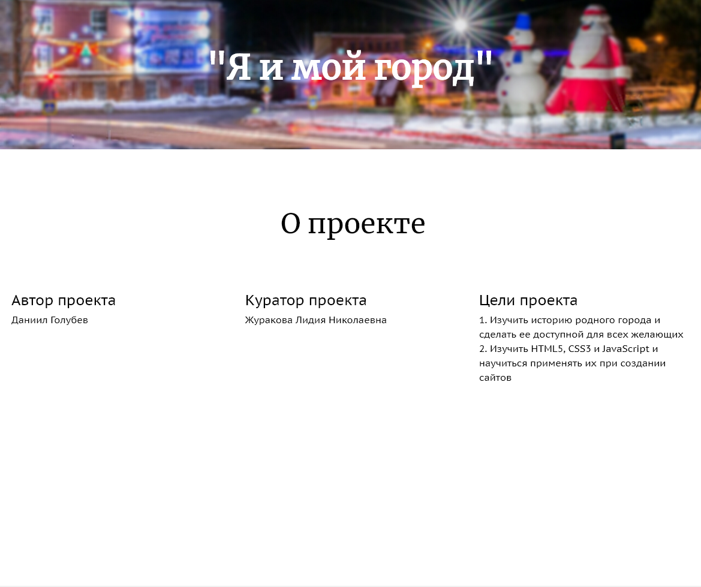
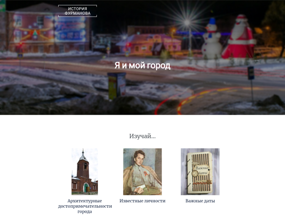
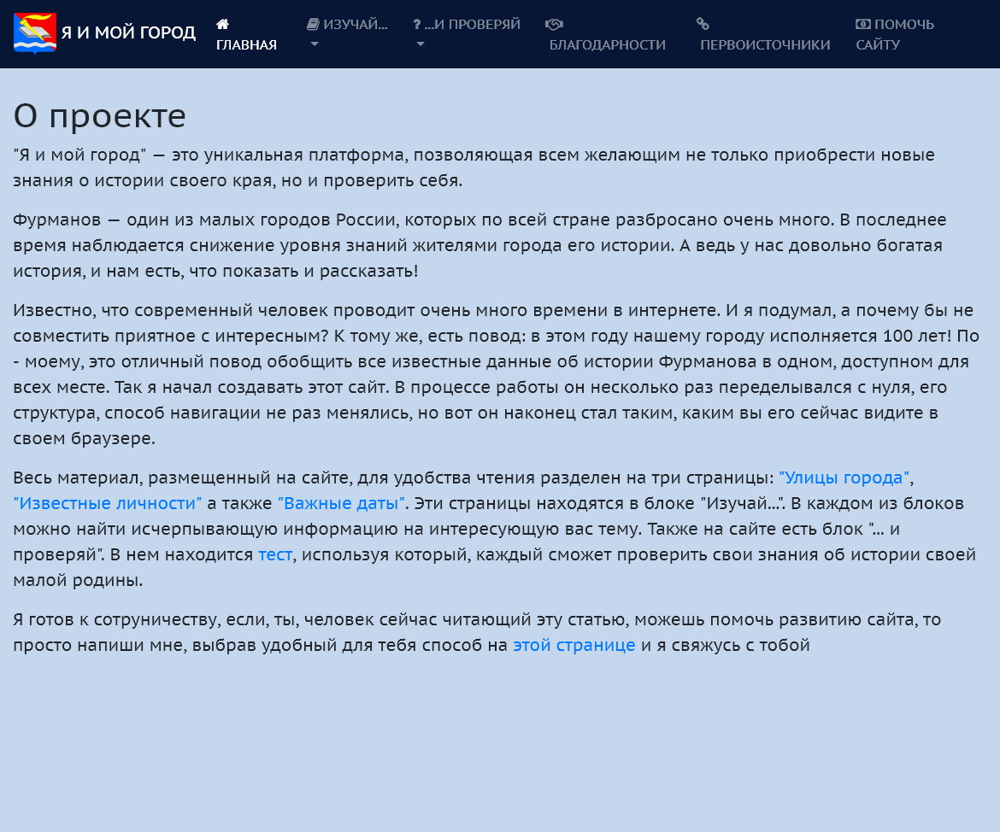
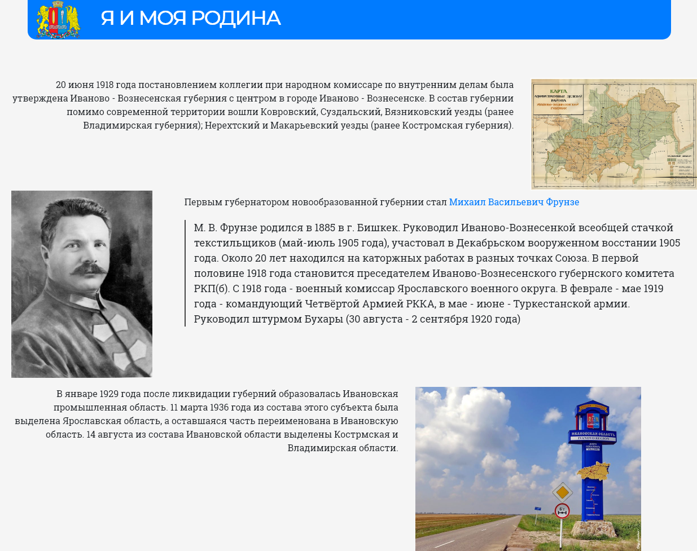

1 этап.
Идея о создании этого проекта появилась у меня после принудительного предложения участвовать в конференции учащихся 10-ых классов с защитой индивидуальных проектов. Так, первая, самая "сырая" версия проекта (условно назовем ее V7.11) появилась в октябре 2017 года. Тогда она находилась лишь на моей флешке и не имела большого количества теории.

2 этап.
В декабре 2017 года администрация школы узнала о моем стремительно развивающемся проекте и выделила средства на его публикакцию в сети Интернет. Начиная с 15 декабря сайт доступен в интернете по адресу историяфурманова.рф. Примерно в это же время началась разработка новой версии сайта (V7.12), но теперь уже на базе платформы для ведения блогов Wordpress

Этап 3.
В феврале – марте велась работа над материалами, полученными от представителей Картинной галереи имени Д. А. Фурманова. В конце марта завершена разработка версии v8.5. В мае 2018 года проект был номинирован на конкурс компьютерных проектов, созданных учащимися Ивановской области, где занял второе место в номинации "Сайты".

Наши дни.
Сейчас ведется разработка модульной системы проекта, для того чтобы можно было быстор и удобно переносить проект на другие регионы. В ближайшие планы по распроспространиению проекта входит Ярославская и Костромская область. Stay tuned!